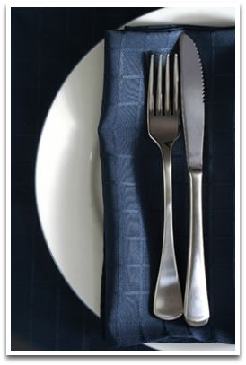

Restaurant
Come and enjoy a complete 4-course dinner prepared using fresh and local ingredients by our own Chef Catherine Anderson. The menu entrees change nightly and always include a creative vegetarian option.
Restaurant Reviews
The restaurant was recently reviewed on The Upper Valley.com
Dining Information
We serve a full breakfast each morning. Visit our lunch bar and choose from salads, sandwiches, soup and ice cream. Each evening we offer full dinners. After soup or salad, you select from one of our main course options including a vegetarian dish. We always make our own delicious desserts in-house. Take a look at our sample menu to the right.
Our traditional Sunday night buffet is served by the lake at 6:00 and includes musical entertainment.
Please remember that we do not have a liquor license, so feel free to bring your own wine or beer.
The Restaurant at Loch Lyme Lodge is open to Lodge guests and the public. If you're not staying in a cabin, we appreciate a call ahead to make a reservation, 603-795-2141.
*** Note that the Restaurant is only open from late June to Labor Day ***
Breakfast
A full breakfast, from 8:00-9:30 AM each morning, is included in the B&B Cabin or purchased separately. To begin your day enjoy juices, a fruit and cereal bar, eggs any style, home-baked muffins, and grill items such as blueberry pancakes, French toast, bacon or sausage. For late sleepers, children who want a snack, or adults looking forward to another cup of coffee, there's a self-service continental breakfast available until 10:30 AM. And for early risers, we'll have coffee, tea, and juice available at 6:30 AM everyday.
Lunch Bar
Our Lunch Bar menu is available between 11:30 AM and 4:30 PM, the take-out menu features sandwiches, salads, quiche, beverages, ice cream cones and more.
Dinner
Serving 6 nights a week in the Main Lodge dining rooms we feature a choice of delicious entrees. We offer an appetizer, house-made soup or fresh salad, beverage and a variety of mouth watering desserts. We make every effort to use locally grown fruit and vegetables (at times harvested from our own garden), and responsibly sourced proteins. Adult guests are welcome to bring their own beer or wine (BYOB).
For children 12 and under we offer a children's menu. Children ages 4 &under are free.
We seat for dinner from 5:30 to 8:00. Reservations are strongly recommended and appreciated. Parents with younger children are encouraged to take the earlier reservations. Each afternoon the dinner menu is available for viewing in the Lodge sunroom entryway.
On Sunday evenings, a traditional New Hampshire buffet supper is served by the lake at 6:00 with a local musical act (weather permitting). Choose from a variety of flavorful salads, main course options, pasta dishes, with lots of fantastic vegetarian fare as well as hot dogs and beans and Chef Catherine's award winning four-cheese mac n cheese for the kids. Water and lemonade are provided and this event is BYOB as well. To finish off your meal we offer watermelon, cookies, brownies or other scrumptious goodies!
At all meals Loch Lyme offers comfortable, informal dining facilities. Families are seated at their own tables. High chairs or booster seats are available as well as some expanded outdoor seating at cafe or picnic style tables. We can also accommodate larger parties and groups on our North Porch. Shirts and shoes are required in the Lodge at all times. Bare feet are strongly encouraged at the beach.
Rates for Dining
Breakfast includes fruit and cereal, fresh-baked muffins, eggs, pancakes, french toast, bacon or sausage, home fries and beverages for $9.75 for adults, $6.50 for children.
Dinner includes a choice of salads, soups, appetizers and entrees, non-alcoholic beverages, and a variety of desserts. All of our food is made fresh, in-house and we use locally produced products whenever possible. The menu is now ala carte pricing. For our Lodge Guests only we offer a new meal plan with choices of 3, 4, 5 or 7 night dining. We do not have a liquor license, but you may bring your own wine or beer.
Sunday Buffet by the Lake is $20.00, $8.00 for children ages 5-12. The Sunday Buffet features a variety of salads, entrees, desserts and water & lemonade. We do not have a liquor license, but you may bring your own wine or beer.
For all meals children ages 4 and under are free.
Special Events
We would be delighted to create a birthday cake for someone in your party for $18.00.